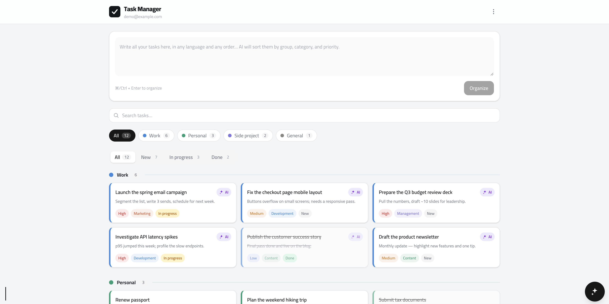
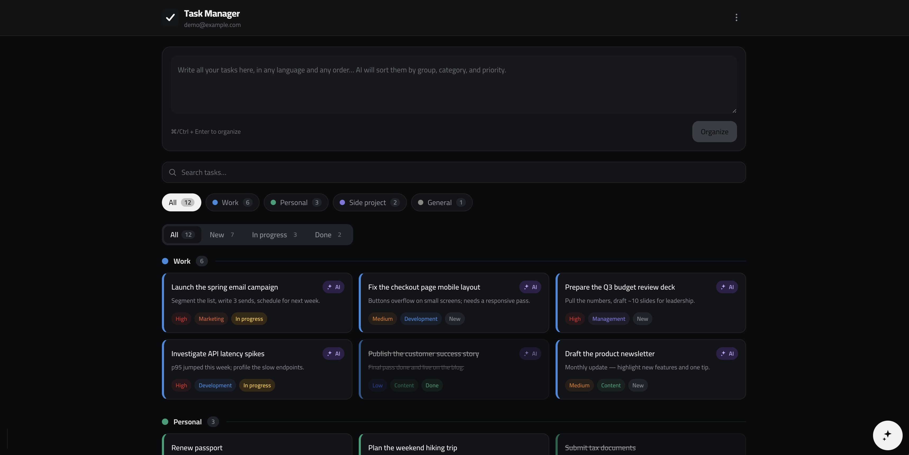
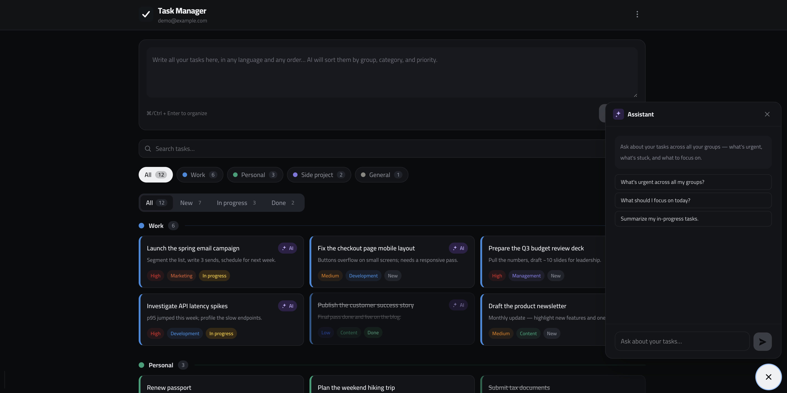

Paste a messy list of tasks in any language. An LLM structures them by bucket, priority, and type, translates them, and helps you execute each one — all on infrastructure you own.

Everything you need to turn scattered thoughts into an executable plan — and nothing that phones home.
Paste free text, get structured tasks — bucket, priority, type, and a faithful English translation — in a single step.
Full English + Arabic UI. Tasks keep their original language and get a shareable English version side by side.
Switch between Anthropic Claude, OpenAI GPT, Google Gemini, and DeepSeek. Only providers whose key you set appear.
Ask the model to actually do the task — draft, code, analyze. Conversation history is saved per task.
Password + authenticator-app (TOTP) login, rate limiting, signed-cookie sessions, and a strict Content-Security-Policy.
Search, a bucket filter, and New · In progress · Done status tabs that all compose together. Dark mode, PWA, JSON/CSV export.
Type or paste everything on your mind — any language, any order, no formatting. Hit ⌘/Ctrl + Enter.
The model splits it into discrete tasks, each tagged with a bucket, priority, and work type, and translated.
Work the board with search and status tabs. Open any task and chat with AI to actually get it done.
Tasks group under the buckets you define — businesses, clients, or projects — each with its own accent. Filter, search, and switch status tabs without losing your place.

Open any task and start a conversation. Draft the email, write the code, outline the deck — the assistant has the task's context and remembers the thread.

Typed end to end, deployable anywhere Node runs, and easy to read.
No SaaS, no seats, no telemetry. One user, your database, your API keys. Up and running in a few minutes.
$ git clone https://github.com/Ferashlk90/ai-task-organizer.git